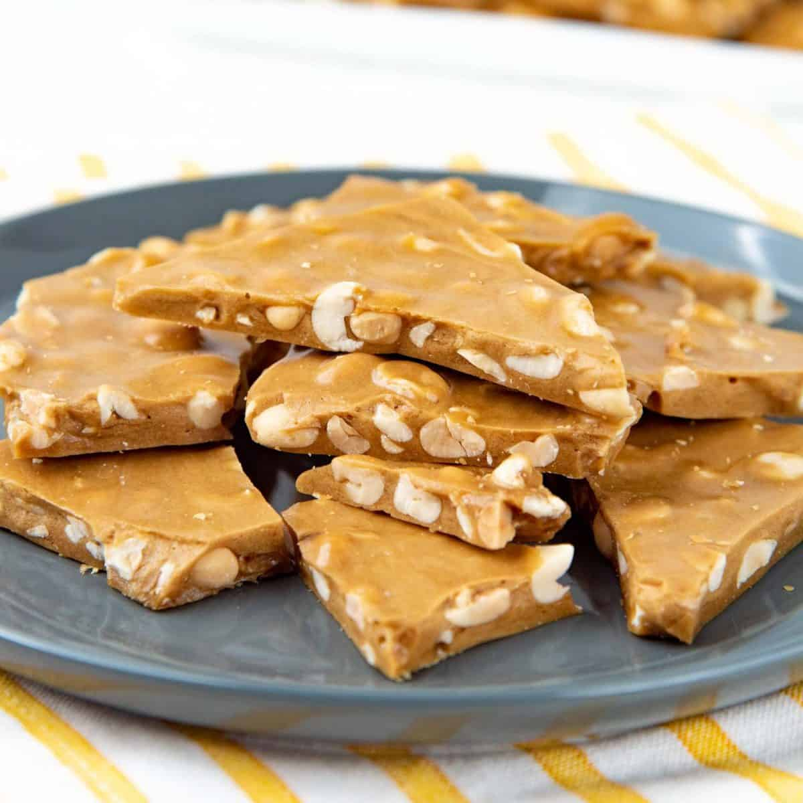

PEANUT BRITTLE
Regular instructions. Serves several. Store in an air-tight container for up to 1 week.

INGREDIENTS
| Ingredient | Amount |
|---|---|
| Granulated Sugar | 2 Cups |
| Rice Malt Syrup | 1 Cup |
| Water | ½ Cup |
| Salt | ½ Tsp |
| Butter (Cubed) | ½ Cup |
| Unsalted Roasted Peanuts | 2 ½ Cups |
| Vanilla | 1 Tbsp |
| Baking Soda | 1 Tsp |
EQUIPMENT
| Equipment |
|---|
| Candy Thermometer |
METHOD
- Line a baking sheet with parchment paper.
- In a large pot, combine 2 cups granulated sugar, 1 cup rice malt syrup, ½ cup water, and ½ tsp salt. Place the candy thermometer so it can measure the mixture, but ensure it's not touching the bottom of the pan. Stir occasionally, but not too often. Continue like this until the thermometer reaches 280° F.
- Add 2 ½ cups peanuts and ½ cup cubed butter to the pot. The temperature will drop initially. Stir continuously until the mixture reaches 300° F.
- Upon reaching 300° F, immediately remove from heat and add 1 tsp baking soda and 1 tbsp vanilla. Stir vigorously to combine.
- Immediately pour the mixture onto the baking sheet and smooth out with a spatula or other instrument, or by shaking the tray. Ensure the mixture covers the sheet to the corners before it solidifies too much.
- Let the peanut brittle set until completely hard, then crack or break the brittle with any hard instrument or your hands into desired-sized pieces. Before placing in a container to store, ensure it has cooled sufficiently.